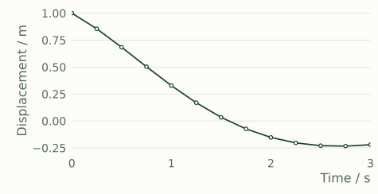
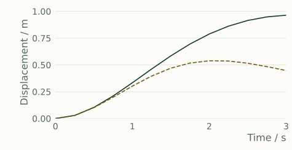

MATHEMATICAL COMPUTING
MathLang
数理計算 / シミュレーション / AIアシスト
式・データ・モデルを扱うWorkbench。
条件を整理するAgent、計算するProcessor、
数理知識を持つKBase。
線形代数フィット・平衡データ・PCA確率・統計振動・動力学熱
01
観測 → 同定
m = 1 kg · 自由応答 · x₀ = 1 m · v₀ = −0.5 m/s

合成観測 同定応答返された剛性 k≈ 1.25 N/m
返された減衰 c≈ 1.00 N·s/m
正のk/cを範囲内で探索。観測RMSE = 4.72 × 10⁻¹² m。
02
条件を変えて → 2候補を比較
m = 1 kg · 外力 1 N · x₀ = 0 · v₀ = 0

同定係数候補 剛性2.5 N/mの候補同定係数候補0.9641 m
剛性2.5 N/mの候補0.5388 m
指定出力時刻での最大 |x|。減衰はいずれも約1 N·s/m。
WORKSPACE, COMPUTATION & KNOWLEDGE
MathLangの構成
WORKSPACEWorkbench
式・モデル・データ・条件・結果を置く作業場所
Simulator
モデルの設定・観測・応答・同定・比較を読む専用ビュー
固定SIの1自由度経路
Workbench → Agent（二群専用）
CONVERSATIONAgent
問い・採取条件・方法の候補を整理。二群の専用経路で訂正と再実行。
保存を含む一巡は検証中 全計算能力の一般的な自動選択・実行は未接続
Workbench → Processor（宣言operation）
COMPUTATIONProcessor
数値と対象・単位・条件を受け取り、結果と数値上の診断を返す。
共通operation 22定義
Agent → KBase（選択式CLI参照）
MATHEMATICAL KNOWLEDGEKBase
定義・命題・成立条件・関係・出典を持つローカル数理知識。
参照・検索の実装 公共ナレッジ公開構想
構成を示す説明図。実線は記載した範囲の既存経路、点線は未接続または構想。一般会話からすべての計算を自動実行する構成ではありません。
PROCESSOR OPERATIONS
宣言された計算能力
22 定義 / 6領域
__CAPABILITIES__
各operationには対象・方法・入力の契約があります。ここで示す数は定義数で、全領域のUIやAgentからの自動実行を表しません。定義一覧
INPUT → RESULT → CONDITIONS
式と、判断のためのデータ
連立方程式 → 残差
実数値入力3x + y = 5
x + 2y = 5x = 1, y = 2
右辺を訂正3x + y = 7
x + 2y = 5x = 1.8, y = 1.6
いずれも残差 [0, 0] · l2ノルム 0
二群の比較 → 判断
検証中- 採取条件と、必要な改善幅を確認
- 独立二群の平均差・不確かさを計算
- 条件を訂正し、元の条件でも再実行
専用Agent経路で操作・数値・再実行を確認。本人原文の保存と採取事実の整合を修正中。
KBASE
数理知識を、条件とともに。
ローカルの知識には、PCA・一般化固有値、確率・Markov、動力学・Newmark、熱と境界条件などを収録。参照・検索の経路を実装しています。
構想公共ナレッジ
知識を公開し、方法の成立条件と出典を辿れるサービスへ。公開サービスと、一般の計算方法選択への接続はこれからです。